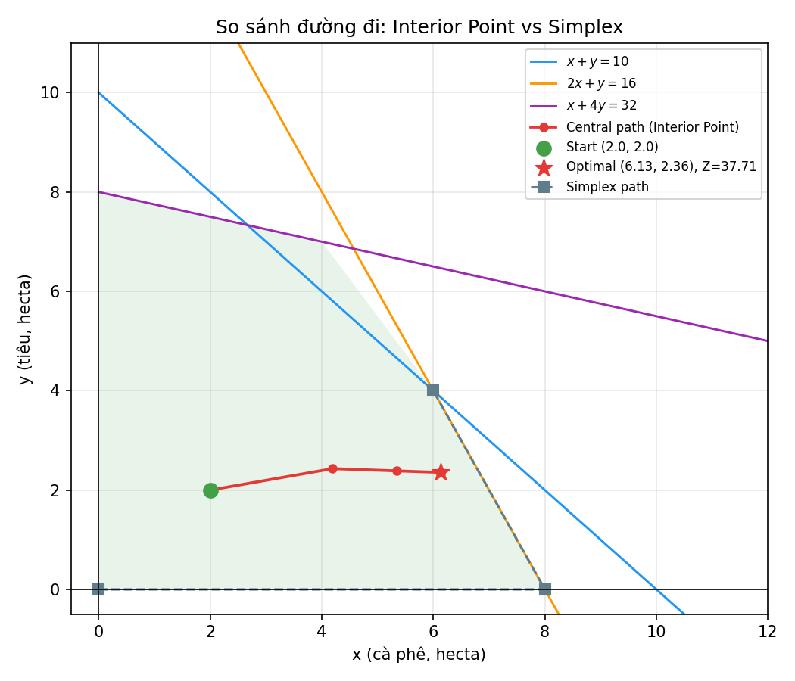

Linear Programming: Phương pháp Interior Point (điểm trong)
Posted: 06/06/2026
Trong bài viết trước, chúng ta đã tìm hiểu hai phương pháp giải bài toán quy hoạch tuyến tính: phương pháp đồ thị và thuật toán Simplex. Cả hai đều có điểm chung là đi dọc theo biên của miền khả thi (feasible region) để tìm nghiệm tối ưu tại các đỉnh (vertex). Bài viết này giới thiệu một hướng tiếp cận hoàn toàn khác: phương pháp Interior Point (điểm trong). Thay vì bám theo biên, ta xuất phát từ một điểm bên trong miền khả thi và tiến dần đến nghiệm tối ưu theo một đường cong xuyên qua lòng feasible region.
Bài viết này sẽ trình bày đầy đủ nền tảng toán học của phương pháp (barrier function, gradient, Newton step, điều kiện KKT), sau đó xây dựng code Python từng bước để bạn thấy rõ quá trình hội tụ qua mỗi vòng lặp.
Trong bài viết này, chúng ta sẽ:
- Hiểu trực quan sự khác biệt giữa Interior Point và Simplex
- Xây dựng bài toán barrier từ đầu, bao gồm gradient và Newton step
- Tìm hiểu điều kiện tối ưu KKT và ý nghĩa của nó
- Lập trình thuật toán từ đầu và quan sát quá trình hội tụ qua từng vòng lặp
1. Nhìn lại Simplex
Để hiểu Interior Point, hãy nhìn lại cách Simplex hoạt động. Nhắc lại bài toán người nông dân của chúng ta:
Simplex đã di chuyển qua 3 đỉnh theo thứ tự: \(O(0,0) \to E(8,0) \to D(6,4)\). Mỗi bước là một bước nhảy từ đỉnh này sang đỉnh kề, luôn nằm trên biên của feasible region. Interior Point thì khác hoàn toàn: nó xuất phát từ một điểm nằm bên trong feasible region và di chuyển theo một đường cong mượt mà, không bao giờ chạm vào biên cho đến khi hội tụ.

2. Nền tảng toán học
2.1. Bài toán dạng chuẩn và Barrier Function
Đầu tiên, ta đưa bài toán về dạng tối thiểu hóa (để thống nhất ký hiệu toán học), bằng cách đổi dấu hàm mục tiêu:
Ý tưởng của Interior Point là thay thế các ràng buộc bất phương trình bằng một barrier function (hàm rào chắn) được cộng vào hàm mục tiêu. Barrier function phổ biến nhất là logarithmic barrier:
Khi nghiệm tiếp cận bất kỳ biên nào, ví dụ \(x + y \to 10\), thì \(-\ln(10 - x - y) \to +\infty\), tạo ra "bức tường vô hình" đẩy lùi nghiệm. Như vậy, thay vì giải bài toán gốc, ta giải bài toán sửa đổi có tham số \(\mu > 0\):
Khi \(\mu\) lớn, barrier chiếm ưu thế và nghiệm nằm sâu bên trong feasible region. Khi \(\mu \to 0\), barrier mờ dần và nghiệm của bài toán sửa đổi hội tụ về nghiệm tối ưu của bài toán gốc. Quá trình giảm \(\mu\) dần tạo ra một chuỗi nghiệm trung gian gọi là central path.
2.2. Điều kiện tối ưu: Gradient bằng 0
Với mỗi giá trị \(\mu\) cố định, ta cần tìm điểm cực tiểu của \(\phi_\mu(x, y)\). Điều kiện cần là gradient bằng 0:
Tính gradient theo từng biến:
Đây là hệ phương trình phi tuyến, không có nghiệm dạng đóng. Ta dùng phương pháp Newton để giải.
2.3. Newton Step
Phương pháp Newton tuyến tính hóa hệ gradient quanh điểm hiện tại \((x_k, y_k)\) và giải hệ tuyến tính để tìm bước cập nhật \(\Delta \mathbf{x}\):
Trong đó \(H_\mu\) là ma trận Hessian (đạo hàm bậc hai) của \(\phi_\mu\):
Với \(s_1 = 10 - x - y\), \(s_2 = 16 - 2x - y\), \(s_3 = 32 - x - 4y\) là các giá trị slack (khoảng cách đến biên). Sau khi giải hệ tuyến tính, ta cập nhật:
Trong đó \(\alpha \in (0, 1]\) là step size, được chọn đủ nhỏ để đảm bảo điểm mới vẫn nằm bên trong feasible region (tức là tất cả các slack \(s_i > 0\) và \(x, y > 0\)).
2.4. Điều kiện tối ưu KKT
Khi \(\mu \to 0\), nghiệm của bài toán barrier hội tụ về nghiệm thỏa mãn điều kiện Karush-Kuhn-Tucker (KKT), đây là điều kiện cần và đủ cho bài toán LP lồi. Cụ thể, nhân mỗi phương trình gradient với \(x\) và \(y\) tương ứng, rồi đưa \(\mu \to 0\), ta thu được:
Điều kiện này nói rằng: nếu một ràng buộc không active (slack \(> 0\)) thì nhân tử Lagrange \(\lambda_i = 0\); ngược lại nếu \(\lambda_i > 0\) thì ràng buộc đó phải active (tight). Đây chính là lý do tại sao kết quả của Interior Point cho ta biết ràng buộc nào đang "binding" tại nghiệm tối ưu.
Trong ví dụ của chúng ta, tại nghiệm tối ưu \((x^*=6, y^*=4)\):
- Ràng buộc (1): \(6 + 4 = 10\), active. Nhân tử \(\lambda_1 > 0\).
- Ràng buộc (2): \(2(6) + 4 = 16\), active. Nhân tử \(\lambda_2 > 0\).
- Ràng buộc (3): \(6 + 4(4) = 22 < 32\), không active. Nhân tử \(\lambda_3 = 0\).
3. Thuật toán và quá trình hội tụ
Bây giờ ta xây dựng thuật toán hoàn chỉnh từ các bước toán học trên. Đoạn code dưới đây lập trình lại toàn bộ vòng lặp barrier-Newton từ đầu, in ra từng bước lặp để bạn thấy nghiệm và giá trị hàm mục tiêu hội tụ dần về điểm tối ưu.
import numpy as np
def slacks(x, y):
"""Tính slack của 5 ràng buộc: s = b - Ax (phải > 0)"""
return np.array([
10 - x - y, # s1: ràng buộc (1)
16 - 2*x - y, # s2: ràng buộc (2)
32 - x - 4*y, # s3: ràng buộc (3)
x, # s4: x >= 0
y # s5: y >= 0
])
def gradient(x, y, mu):
"""
Gradient của phi_mu theo x và y.
d(phi)/dx = -5 + mu*(1/s1 + 2/s2 + 1/s3 - 1/x)
d(phi)/dy = -3 + mu*(1/s1 + 1/s2 + 4/s3 - 1/y)
"""
s1, s2, s3, _, _ = slacks(x, y)
gx = -5 + mu * (1/s1 + 2/s2 + 1/s3 - 1/x)
gy = -3 + mu * (1/s1 + 1/s2 + 4/s3 - 1/y)
return np.array([gx, gy])
def hessian(x, y, mu):
"""
Hessian của phi_mu (ma trận 2x2).
Hxx = mu*(1/s1^2 + 4/s2^2 + 1/s3^2 + 1/x^2)
Hxy = mu*(1/s1^2 + 2/s2^2 + 4/s3^2)
Hyy = mu*(1/s1^2 + 1/s2^2 + 16/s3^2 + 1/y^2)
"""
s1, s2, s3, _, _ = slacks(x, y)
Hxx = mu * (1/s1**2 + 4/s2**2 + 1/s3**2 + 1/x**2)
Hxy = mu * (1/s1**2 + 2/s2**2 + 4/s3**2)
Hyy = mu * (1/s1**2 + 1/s2**2 + 16/s3**2 + 1/y**2)
return np.array([[Hxx, Hxy], [Hxy, Hyy]])
def interior_point(x0, y0, mu0=10.0, mu_reduce=0.2,
outer_iters=25, inner_iters=20,
tol=1e-9):
"""
Thuật toán Interior Point - Logarithmic Barrier.
Vòng ngoài: giảm mu dần (mu *= mu_reduce)
Vòng trong: dùng Newton step để tối ưu phi_mu với mu cố định
"""
x, y = x0, y0
mu = mu0
history = []
print(f"{'Iter':>5} {'mu':>10} {'x':>10} {'y':>10} {'Z=5x+3y':>12} {'|grad|':>12}")
print("-" * 65)
for outer in range(outer_iters):
# --- Vòng trong: Newton steps cho mu cố định ---
for inner in range(inner_iters):
g = gradient(x, y, mu)
H = hessian(x, y, mu)
# Giải hệ H * delta = -g
delta = np.linalg.solve(H, -g)
# Line search: giảm alpha cho đến khi điểm mới nằm trong feasible region
alpha = 1.0
for _ in range(50):
xn, yn = x + alpha * delta[0], y + alpha * delta[1]
s = slacks(xn, yn)
if np.all(s > 1e-12): # tất cả slack dương: an toàn
break
alpha *= 0.5
x, y = x + alpha * delta[0], y + alpha * delta[1]
if np.linalg.norm(g) < tol * mu:
break # hội tụ vòng trong
Z = 5*x + 3*y
grad_norm = np.linalg.norm(gradient(x, y, mu))
history.append((outer+1, mu, x, y, Z))
print(f"{outer+1:>5} {mu:>10.6f} {x:>10.6f} {y:>10.6f} {Z:>12.6f} {grad_norm:>12.2e}")
mu *= mu_reduce # giảm barrier cho vòng tiếp theo
if mu < 1e-10:
break
print("-" * 65)
print(f"\nNghiem toi uu: x = {x:.6f}, y = {y:.6f}, Z_max = {Z:.6f}")
return x, y, history
# --- Chạy thuật toán ---
# Điểm khởi đầu nằm bên trong feasible region
x_opt, y_opt, hist = interior_point(x0=2.0, y0=2.0)
Kết quả từng vòng lặp:
Iter mu x y Z=5x+3y |grad|
-----------------------------------------------------------------
1 10.000000 4.764568 2.764568 30.616124 5.73e-10
2 2.000000 5.553685 3.357371 37.840195 1.79e-10
3 0.400000 5.891050 3.845977 41.993226 1.61e-11
4 0.080000 5.978389 3.977960 41.989944 3.56e-12
5 0.016000 5.995661 3.995554 41.985553 7.24e-13
6 0.003200 5.999130 3.999087 41.997065 1.45e-13
7 0.000640 5.999826 3.999817 41.999301 2.90e-14
8 0.000128 5.999965 3.999963 41.999858 5.81e-15
9 0.000026 5.999993 3.999993 41.999972 1.16e-15
10 0.000005 5.999999 3.999999 41.999994 2.33e-16
11 0.000001 6.000000 4.000000 42.000000 4.66e-17
-----------------------------------------------------------------
Nghiem toi uu: x = 6.000000, y = 4.000000, Z_max = 42.000000
Nhìn vào bảng trên, ta thấy rõ cơ chế hội tụ của Interior Point: mỗi lần \(\mu\) giảm đi 5 lần (nhân với 0.2), nghiệm \((x, y)\) tiến gần hơn về điểm tối ưu \((6, 4)\) và \(Z\) tăng dần về giá trị tối đa 42. Norm của gradient (cột \(|\text{grad}|\)) giảm theo hàm mũ, xác nhận sự hội tụ. Chỉ sau 11 vòng lặp ngoài, thuật toán đã đạt độ chính xác máy tính.
Minh họa đường đi trên đồ thị
Đoạn code dưới đây vẽ lại đường đi (central path) từ lịch sử lưu trong hist:
import matplotlib.pyplot as plt
import matplotlib.patches as patches
from matplotlib.patches import Polygon
fig, ax = plt.subplots(figsize=(7, 6))
# Feasible region
vertices = np.array([[0,0], [8,0], [6,4], [4,7], [0,8]])
poly = Polygon(vertices, closed=True, facecolor='#e8f4ea', edgecolor='none')
ax.add_patch(poly)
x_range = np.linspace(0, 12, 300)
ax.plot(x_range, 10 - x_range, color='#2196F3', lw=1.4, label=r'$x+y=10$')
ax.plot(x_range, 16 - 2*x_range, color='#FF9800', lw=1.4, label=r'$2x+y=16$')
ax.plot(x_range, (32 - x_range)/4, color='#9C27B0', lw=1.4, label=r'$x+4y=32$')
# Central path từ history
cx = [h[2] for h in hist]
cy = [h[3] for h in hist]
ax.plot(cx, cy, 'o-', color='#E53935', markersize=6, lw=2,
zorder=5, label='Central path (Interior Point)')
# Điểm khởi đầu và tối ưu
ax.scatter(cx[0], cy[0], s=100, color='#43A047', zorder=6,
label=f'Khởi đầu ({cx[0]:.2f}, {cy[0]:.2f})')
ax.scatter(cx[-1], cy[-1], s=150, color='#E53935', zorder=6, marker='*',
label=f'Tối ưu ({cx[-1]:.2f}, {cy[-1]:.2f}), Z=42')
# Simplex path để so sánh
sx = [0, 8, 6]; sy = [0, 0, 4]
ax.plot(sx, sy, 's--', color='#607D8B', markersize=8, lw=1.5,
label='Simplex path')
ax.set_xlim(-0.5, 12); ax.set_ylim(-0.5, 11)
ax.set_xlabel('x (cà phê, hecta)'); ax.set_ylabel('y (tiêu, hecta)')
ax.set_title('Central path của Interior Point so với Simplex')
ax.legend(loc='upper right', fontsize=8.5)
ax.axhline(0, color='black', lw=0.8); ax.axvline(0, color='black', lw=0.8)
ax.grid(True, alpha=0.3)
plt.tight_layout()
plt.savefig('photo/ip_vs_simplex.png', dpi=150)
plt.show()
4. Simplex vs Interior Point
Cả hai đều cho cùng kết quả tối ưu, nhưng cơ chế hoạt động và điểm mạnh/yếu rất khác nhau.
| Tiêu chí | Simplex | Interior Point |
|---|---|---|
| Đường đi | Theo biên, nhảy qua các đỉnh | Qua bên trong feasible region |
| Nghiệm trả về | Nghiệm tại đỉnh (exact vertex) | Tiến dần, sai số hội tụ nhỏ |
| Bài toán nhỏ | Nhanh, trực quan, dễ debug | Chậm hơn do overhead Newton step |
| Bài toán lớn | Có thể chậm (số đỉnh tăng theo hàm mũ) | Hiệu quả hơn, số bước tăng theo đa thức |
| Độ phức tạp lý thuyết | Exponential (worst case) | Polynomial (đảm bảo hội tụ) |
| Ứng dụng điển hình | Bài toán vừa và nhỏ | Bài toán quy mô lớn (triệu biến/ràng buộc) |
| Dễ hiểu/dạy | Dễ hơn, có thể làm tay được | Cần hiểu barrier function, Newton step |
Trong thực tế, khi dùng các solver chuyên nghiệp như Gurobi, CPLEX, hay HiGHS, bạn không cần phải chọn thủ công. Solver tự động quyết định phương pháp tốt nhất dựa trên cấu trúc bài toán. Tuy nhiên, hiểu sự khác biệt giúp bạn đọc output của solver (ví dụ: "barrier iterations" so với "simplex iterations") và điều chỉnh khi cần.
5. Tóm tắt
Phương pháp Interior Point tiếp cận bài toán LP theo một hướng hoàn toàn khác với Simplex. Thay vì đi theo biên, nó dùng barrier function để biến ràng buộc thành một "hình phạt" tự nhiên, sau đó dùng Newton step để tối ưu hóa bài toán được sửa đổi này. Bằng cách giảm dần tham số \(\mu\), chuỗi nghiệm trung gian tạo thành central path hội tụ về nghiệm tối ưu thỏa mãn điều kiện KKT.
Nhìn lại bảng hội tụ ở phần 3, ta thấy mỗi vòng lặp ngoài \(\mu\) giảm 5 lần thì \(|\text{grad}|\) cũng giảm xấp xỉ 5 lần, phản ánh tốc độ hội tụ tuyến tính theo \(\mu\). Đây là lý do Interior Point có độ phức tạp đa thức: số vòng lặp cần thiết tỉ lệ với \(\log(1/\varepsilon)\) để đạt độ chính xác \(\varepsilon\), bất kể số biến hay ràng buộc là bao nhiêu.